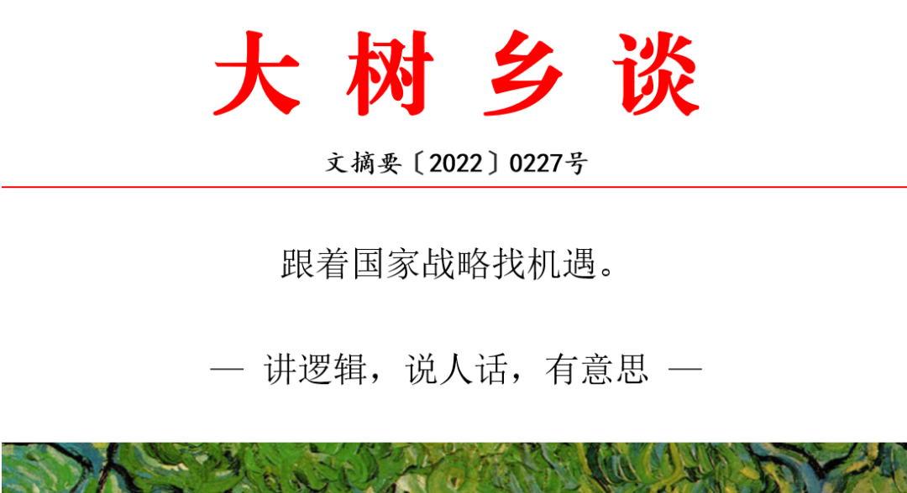
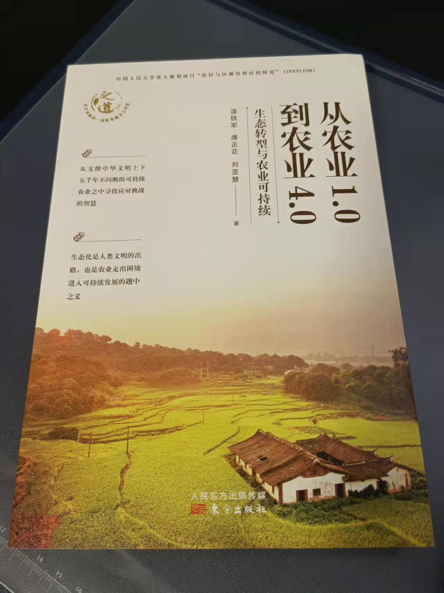
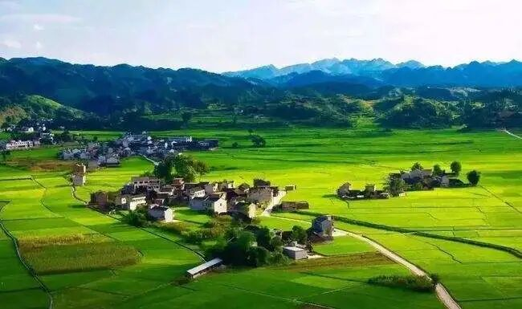

一个改变普通人命运的大蓝海

改革开放几十年，重点在城市。 现在城市已经发展到比较高的层次，一些城市已经达到或者接近发达国家水平，更多的城市已经陷入内卷。 中国未来的发展，城市依旧重要，但一个更加广阔的领域将成为中国未来几十年的重点，也必将诞生更多改变普通人未来的机遇——那就是乡村。 接下来小镇想通过解读中央一号文，以及一些与乡村有关的书籍，分享下小镇对于乡村发展和机遇的理解。 今天是一个开头，方便大家对乡村振兴有一个宏观的感知。有一本书小镇觉得挺不错，叫《从农业1.0到农业4.0——生态转型与可持续发展》，作者是温铁军、唐正花、刘亚慧等。

这本书小镇觉得非常适合系统了解乡村振兴，有不少优点，也有小镇觉得不足的地方。 优点在于，以1.0、2.0、3.0、4.0这样有层次的结构对农业的发展以及这里面存在的机遇进行了概括性的描述，非常有助于理解，而且也举了一些例子。 不足之处在于，温老等可能对于互联网等新兴事物了解并不深。从书中可以明显感觉到，相比前三个部分，1.0大农场农业、2.0农业产业化、3.0农业服务业化，书中定义4.0也就是农业+互联网，明显感觉差了不止一个档次，怀疑可能是一些学生写的。
不过作为了解农业的第一本书是够的。 具体的一些内容暂时不一一详述了，谈谈小镇对于乡村振兴的理解。 小镇有一个总结，叫：脱贫攻坚慢不得，乡村振兴急不得。 插个题外话，小镇的文公务员考试申论和面试都用得上，假如涉及乡村振兴，如果能记起这一篇并且活用，多半会加分。 怎么讲呢？ 脱贫攻坚是救穷，救穷如救命。要解决城乡二元差距增大带来的一系列问题，更要在已经有能力的情况下，解放仍然处于绝对贫困的一亿中国人。倘若晚了，下一代也耽搁了，无论从中国的国家追求又或者对未来人力的需求上，都必须加快，而且还要一鼓作气，一旦退缩，就很可能畏难。
乡村振兴是底层变革，急不得。乡村振兴当然要解决一系列基础性的问题，比如说经济发展、收入、公共服务保障等等，但也要解决人才和制度性的问题，要打造一个更加现代文明的农村生态，否则如丰县这样拐卖妇女当媳妇的事情就不可能根本解决。 更重要的是要解决精神和思想问题。这些问题相比解决绝对贫困的脱贫攻坚难得多。 乡村振兴，起码要做好30年的准备。这也就意味着会产生大量的机遇，年轻人熟悉新生事物、有闯劲，更能在这片蓝海找到机遇。具体可以看下次条《年轻人的“追赶者优势”》。
今天先谈下小镇看完这本书的想法，特别感谢陈锡文、温铁军等三农领域真正专家的教诲，小镇才能有这些仍显浅薄的思考。 首先是小镇比较认可的部分，那就是1.0、2.0和3.0的时代划分和解读。 一是农业1.0
在这本书中，农业1.0时代的典型代表就是美国的大农场，但是必须强调美国的大农场有自身的独特性，比如地理地形等，但更关键的是欧洲殖民者将原住民几乎屠杀殆尽，大量的土地无主了，这才有大农场形成的可能。 西方工业革命追求的就是效率的不断提升，但是美国的大农场实现的是人均效率的提升，一个农场主家庭可以种植相当于中国上千甚至上万农民种植的土地。
但是美国的这种模式如果从土地和资源投入角度看，效率极低，远远低于中日韩的精细化小农生产。 比如小镇在昨天《2022年全球粮食危机，准备好了吗？》一文提到，美国的大农场生产，每产1亿吨粮食，需要消耗2000多万吨石油、20多万吨钢铁。假如全世界都采用美国的农业生产方式，那仅农业就将消耗全球一半以上的石油产量。 这当然是不可能的。 更何况，中国是一个延续几千年的文明，中国的根就是农业，数亿农民与土地捆绑，我们不可能在全国大范围推广美国式的大农场生产。改革开放几十年来，之所以中国城市没有形成贫民窟，一方面是我们讲究公平性，另一方面在于农村的土地给了进城农民退路。 无论如何都不能轻易断开农民和土地的联系，否则要出大乱子。
2020年疫情以来，数千万农民工返乡就证明了这一点。 所以美国的1.0农业，在中国只有极少数地区可以。这一点小镇认同书中的观点。 二是农业2.0
所谓农业2.0，实际就是农业的产业化，在传统农业基础上，引入工业等产业，延长农业的产业链，创造更大的价值，比如说靠近农业作物产区的精细化加工等等，工业创造的价值要更高于农业，这一点在过去的几十年里已经有比较多的实践了。 但是基于中国的传统情况，就有了一个问题：中国农民太多、人均耕地太少，就导致任何到农村拓展业务的都要面对数百数千甚至数万农民，人多就容易出现分歧，交流、培训以及其他成本极高。
我们经常看到一些报道，说是一些农村能人，去推广标准化的农业生产，但是当地人不接受，总觉得凭什么苹果样子不好看点、小一点就不行，改变观念是很难的事。 这就不如美国简单，生产企业只需要跟几位农场主沟通好就可以了。 但是正如城市里，越来越多的高收入岗位是服务业，满足人的消费需求本身就是新的就业岗位。农村也一样，无论农业还是工业，利润终归是有限的，而且以农村的情况，发展工业是有很大限制的，过去曾经存在的农村集体企业，也因为城市的崛起，大不如前。
这时候就需要考虑农村或者农业更加本质的东西。
三是农业3.0
城市自然是追求效率的，那么农村呢？农村更大的价值在小镇看来一是生态，二是中华民族农耕文明的灵魂，所以可持续的发展才应该是农村需要遵循的。
在这种情况下，书中讲农业3.0，也就是农业的服务化，将更多服务业与农业相结合，更基于2.0的产业化创造更多的复合价值。比如乡村文旅、休闲、养老，还有保险等进入。 而农业的服务业化，就可以大量吸引城里人来到农村，就解决了乡村振兴极为需要的人才和人文环境重塑。
城里的年轻人，虽然不熟悉农业，但是更了解城市的生活，更了解城里人的需求，那么相比成长在农村的，就更容易把握这里面的机会。 然后就是小镇不太认可的4.0部分，这也是小镇觉得这本书不足之处。 书中将农业4.0，定义为在2.0的产业化、3.0的服务业化基础上引入互联网。 但是非常明显的感觉到，这本书对于到底什么是互联网，互联网又该如何与农业相结合，自己也没有想清楚，有点像是为了同新潮的“数字经济”关联上。但还是非常感谢提出了一个4.0的概念。
在小镇看来，互联网无论是作为数字产业化还是产业数字化，还是与第一、第二和第三产业高度融合的。 当然互联网由于自身的特点，比如平台化运营，可以将数以千万乃至数亿个体以数据和算法统一聚合，大大降低了交流成本，在这种聚合中也是对乡村人的心智的改变，促进乡村更加现代化，这是没有问题的，今年的中央一号文也以较大篇幅谈农村电商和数字乡村发展。 这种数字平台模式也有助于解决中国小农经济，数以亿计农民导致交流等成本过高的问题，可以大大减少农业产业化、服务业化的推广成本，更可以为广大年轻人创造更多的施展空间。
但这仍然没有本质的变化，还是处于打基础的阶段。 所以这本书认为的4.0，小镇觉得最多可以称之为农业3.5。类似于无限接近但是永远达不到4代的众多3代战机们。 书中描述的，在小镇看来仍然是乡村振兴的第一步，也就是打造物质的基础，包括经济、收入、生活方式、人才、制度等等。在这个过程中为了满足农业服务化，吸引更多城市人来到农村，体验属于中国的人文渊源，农村的生态环境会进一步变好，越来越多的绿水青山会变成金山银山。 但乡村振兴不仅仅是物质的，关键是精神的，取决于我们到底如何看待农村。 农村绝不是中国的负担，几千年来，中华文明的根和底气都在农村，农村严重落后于时代也不过是最近几十年的事。
中华文明作为农耕文明，有太多的根源在农村，这个根一定要留住。 看看现在的乌克兰，把过去社会主义的根丢了，直接跳到了资本主义，然而这种根本的变化，更加容易被外部强国干扰，国内思想更加混乱，现在呢？政府、军队、民众离心离德，这样的乌克兰当然不会被欧美尊重。 我们当然要承认现在的农村落后了，有很多封建余毒，还有些时代变化与传统混杂而成的扭曲，有很多历史遗留问题，比如丰县出现的问题。

但中国民族精神，不能只靠千篇一律的城市，城市效率确实高，但是在以人为本方面，更加冷酷。很多人在城市待久了往往会觉得孤单。假如农村既有田园生气、又有现代化的公共服务，传统和现代的优点更加结合，会不会更好呢？ 何况，共产主义本质是人的解放，这种解放关键在于人的思想和精神。我们讲的共同富裕也包括了物质和精神两个层面，那么无论从任何角度，推动农村追赶上时代，并且为中华民族继续前进提供动力，都是必须的。 所以在小镇看来，农业的4.0当然存在，但绝不是互联网化，互联网仅仅是工具，并不能实现变革。
真正的农业4.0，同小镇认为的第四产业有共同之处，都是基于人本身的价值。 这个第四产业与当前社会上各大专家认为的不同，在当前社会普遍认为的第四产业指的是本身没有明显利润但是可以提升其他产业利润的公共产业，或者说信息服务业。 但是小镇觉得这太单薄了，毕竟互联网或者说数字，也不过是时代的技术发展，论其本质可以归入第二产业工业和第三产业服务业，没有必要也没有足够的资格单列为第四产业。 在小镇个人看来，真正的第四产业，更追求人的本质，将与人有关的一切纳入，包括人的身体、精神、思想的维持、修复、发展，比如医疗、心理健康，也包括更加追求人解放的一些领域。 农业的4.0同样是以人为本，属于乡村振兴的第二阶段，那就是在乡村实现人的进一步解放，让人找回本我，而不是被困于钢筋水泥之中。 当然这个阶段比农业互联网要难得多，二三产业和互联网与农业的结合，在政策积极引导、社会和人民普遍参与下，可能10-15年可以有一个雏形，在很多地方可以打造很好的基础。
然后就可以进入下半场，在乡村寻求人的进一步解放，比如在生态自然中寻求人的本真，又比如在乡村修复在城市拼搏造成的疲劳和伤痛，将乡村变成人休养生息的家园。 那时的乡村将与城市进一步融合，休戚与共，乡村就不再是落后贫穷的代名词，而成了一种向往的新生活。 那这里面又将诞生多少机会呢？尤其是很多机会需要更敏锐的把握时代发展和新生事物、更有冲劲，这正是年轻人的机会，毕竟城市里拼搏的门槛越来越高，乡村才是新的蓝海。 最后推荐这本书，还是值得一读的，接下来小镇会分享下对中央一号文和乡村振兴的理解，大家对于这本书和政策有什么想法、疑问也请留言。
（提醒下，有兴趣的话，这本书可以点下面链接，也可以自己去京东搜索购买，价格应该是一样的）。
其他文章推荐
■ 旧机制与新变革
如果喜欢，还请点赞、“在看”和关注吧 欢迎分享，让更多人发现“大树乡谈”